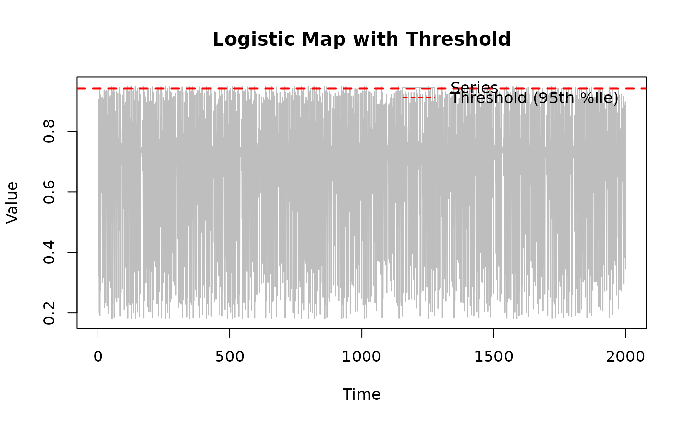
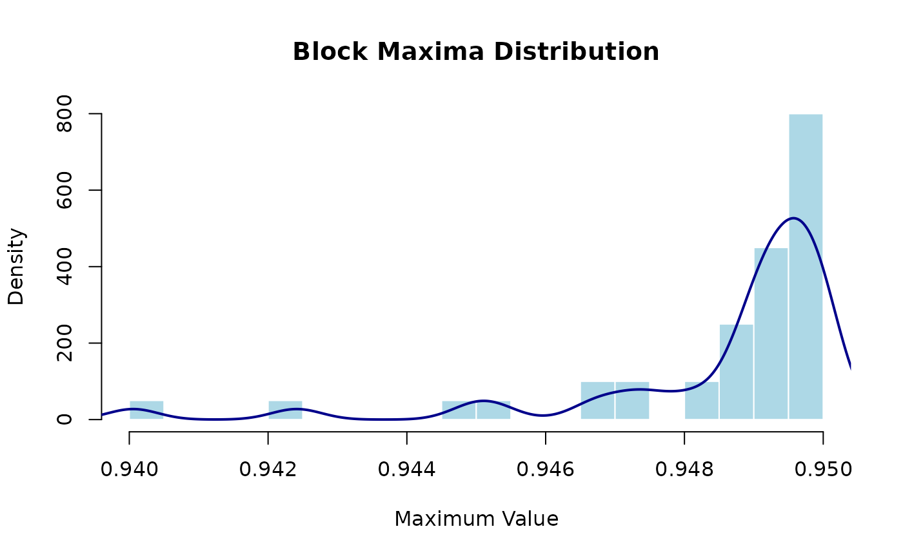
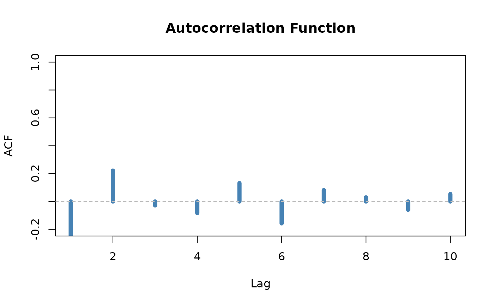

Runs a comprehensive extreme value analysis on a simulated logistic map, applying both block maxima and peaks-over-threshold methods. This function provides a complete workflow demonstration and returns all results in a structured list for further exploration.
Usage
run_demo(
n = 2000L,
r = 3.8,
x0 = 0.2,
block_size = 50L,
threshold_q = 0.95,
output_report = FALSE
)Arguments
- n
Integer. Number of iterations to simulate. Must be positive. Recommended: at least 2000 for reliable statistics. Larger values (5000-10000) provide better estimates but take longer. Default: 2000.
- r
Numeric. The logistic map parameter. Valid range [0, 4]. For chaotic behavior, use r ≥ 3.57. Default: 3.8 (robust chaotic regime).
- x0
Numeric. Initial condition in (0, 1). The specific value is typically not critical for chaotic parameters after transient behavior dies out. Default: 0.2.
- block_size
Integer. Size of blocks for block maxima method. Should be chosen to ensure at least 20-50 blocks (so block_size ≤ n/20). Default: 50 (gives 40 blocks when n=2000).
- threshold_q
Numeric. Quantile to use as threshold for POT analysis. Should be between 0.9 and 0.99. Higher values give fewer but more extreme exceedances. Default: 0.95 (recommended starting point).
- output_report
Logical. If TRUE and rmarkdown package is available, generates a PDF report named "demo-chaos.pdf" in the current directory with key results. Default: FALSE.
Value
A named list with 11 components (see **Output Structure** in Details). Each component can be accessed using `$` notation, e.g., `results$extremal_index` or `results$gev_fit`.
The list structure makes it easy to: - Extract specific results: `results$extremal_index["runs"]` - Examine fits: `summary(results$gev_fit)` - Create custom plots: `hist(results$block_maxima)` - Compare methods: `results$extremal_index["runs"]` vs `results$extremal_index["intervals"]`
Details
## Overview This function serves multiple purposes: 1. **Educational**: Demonstrates a complete EVT workflow 2. **Exploratory**: Quick analysis of chaotic system extremes 3. **Template**: Shows how to combine package functions 4. **Comparison**: Applies multiple methods to the same data
The function simulates chaotic dynamics and then performs: - Block maxima extraction and GEV fitting - Peaks-over-threshold analysis and GPD fitting - Extremal index estimation (runs and intervals methods) - Cluster analysis - Autocorrelation and mixing diagnostics - Threshold selection diagnostics
## Workflow Steps 1. **Simulate** logistic map with specified parameters 2. **Extract extremes** using block maxima method 3. **Fit GEV** distribution to block maxima 4. **Identify exceedances** above high threshold 5. **Fit GPD** distribution to exceedances 6. **Estimate θ** using runs and intervals methods 7. **Analyze clusters** of extreme events 8. **Compute diagnostics** (ACF, mixing coefficients) 9. **Generate report** (optional PDF output)
## When to Use - Learning the package workflow - Quick exploratory analysis - Comparing different EVT methods - Generating demonstration results
## When NOT to Use - Production/research analysis (use individual functions instead) - When you need fine control over parameters - For non-logistic-map data (adapt the workflow manually) - When computational efficiency is critical
## Customizing the Workflow For production analysis, use individual functions: “`r # 1. Simulate or load your data series <- simulate_logistic_map(n = 5000, r = 3.8, x0 = 0.2)
# 2. Choose threshold carefully threshold <- quantile(series, 0.95)
# 3. Apply specific methods bm <- block_maxima(series, block_size = 100) gev_fit <- fit_gev(bm) theta <- extremal_index_runs(series, threshold, run_length = 2)
# 4. Validate and diagnose # ... your custom analysis ... “`
Output Structure
The returned list contains 11 components organized by analysis type:
**Simulation**: - `series`: The simulated time series
**Threshold Selection**: - `threshold`: The chosen threshold value - `diagnostics`: Threshold selection diagnostics
**Block Maxima Method**: - `block_maxima`: Extracted maxima values - `gev_fit`: Fitted GEV model object
**Peaks-Over-Threshold Method**: - `exceedances`: Values above threshold - `gpd_fit`: Fitted GPD model object
**Extremal Index**: - `extremal_index`: Named vector with `runs` and `intervals` estimates
**Cluster Analysis**: - `cluster_sizes`: Vector of cluster sizes - `cluster_summary`: Summary statistics for clusters
**Diagnostics**: - `acf`: Autocorrelation function values - `mixing`: Mixing coefficient estimates
References
Coles, S. (2001). *An Introduction to Statistical Modeling of Extreme Values*. Springer. doi:10.1007/978-1-4471-3675-0
This workflow implements methodology from multiple chapters of Coles (2001) and demonstrates integration of different EVT approaches.
See also
**Individual workflow steps**:
simulate_logistic_map, block_maxima,
fit_gev, exceedances, fit_gpd,
extremal_index_runs, extremal_index_intervals,
cluster_sizes, threshold_diagnostics
**Vignettes**:
vignette("getting-started") for guided tutorial,
vignette("estimating-theta-logistic") for extremal index details,
vignette("block-maxima-vs-pot-henon") for method comparison
Examples
# Basic usage with defaults
demo_results <- run_demo()
names(demo_results)
#> [1] "series" "threshold" "diagnostics" "block_maxima"
#> [5] "gev_fit" "exceedances" "gpd_fit" "extremal_index"
#> [9] "cluster_sizes" "cluster_summary" "acf" "mixing"
# Examine structure
str(demo_results, max.level = 1)
#> List of 12
#> $ series : num [1:2000] 0.2 0.608 0.906 0.325 0.833 ...
#> $ threshold : Named num 0.943
#> ..- attr(*, "names")= chr "95%"
#> $ diagnostics :List of 2
#> $ block_maxima : num [1:40] 0.947 0.95 0.95 0.949 0.949 ...
#> $ gev_fit :List of 17
#> ..- attr(*, "class")= chr [1:4] "chaotic_model" "gev" "uvevd" "evd"
#> ..- attr(*, "chaotic_model")= chr "gev"
#> ..- attr(*, "chaotic_method")= chr "evd::fgev"
#> $ exceedances : num [1:100] 0.947 0.945 0.95 0.949 0.947 ...
#> $ gpd_fit :List of 25
#> ..- attr(*, "class")= chr [1:4] "chaotic_model" "pot" "uvevd" "evd"
#> ..- attr(*, "chaotic_model")= chr "gpd"
#> ..- attr(*, "chaotic_method")= chr "evd::fpot"
#> ..- attr(*, "chaotic_threshold")= num 0.943
#> $ extremal_index : Named num [1:2] 1 3
#> ..- attr(*, "names")= chr [1:2] "runs" "intervals"
#> $ cluster_sizes : int [1:100] 1 1 1 1 1 1 1 1 1 1 ...
#> $ cluster_summary: Named num [1:2] 1 0
#> ..- attr(*, "names")= chr [1:2] "mean_size" "var_size"
#> $ acf : num [1:10] -0.6249 0.2215 -0.0286 -0.0834 0.1315 ...
#> $ mixing : num [1:10] 0.0025 0.00251 0.00251 0.00251 0.00251 ...
# Access specific results
cat("Extremal index (runs):", demo_results$extremal_index["runs"], "\n")
#> Extremal index (runs): 1
cat("Extremal index (intervals):", demo_results$extremal_index["intervals"], "\n")
#> Extremal index (intervals): 3
# Examine GEV fit
print(demo_results$gev_fit)
#> <chaotic_model>
#> Model: gev
#> Method: evd::fgev
#> Parameters:
#> loc scale shape
#> 0.948185 0.003620 -1.353400
# Look at cluster statistics
print(demo_results$cluster_summary)
#> mean_size var_size
#> 1 0
# Customize parameters for different analysis
demo_r4 <- run_demo(n = 5000, r = 4.0, block_size = 100, threshold_q = 0.99)
cat("Higher threshold gives fewer exceedances:",
length(demo_r4$exceedances), "\n")
#> Higher threshold gives fewer exceedances: 50
# Compare different thresholds
results_90 <- run_demo(n = 3000, threshold_q = 0.90)
results_95 <- run_demo(n = 3000, threshold_q = 0.95)
results_99 <- run_demo(n = 3000, threshold_q = 0.99)
cat("\nThreshold sensitivity:\n")
#>
#> Threshold sensitivity:
cat("q=0.90: theta =", round(results_90$extremal_index["runs"], 3),
"with", length(results_90$exceedances), "exceedances\n")
#> q=0.90: theta = 0.607 with 300 exceedances
cat("q=0.95: theta =", round(results_95$extremal_index["runs"], 3),
"with", length(results_95$exceedances), "exceedances\n")
#> q=0.95: theta = 1 with 150 exceedances
cat("q=0.99: theta =", round(results_99$extremal_index["runs"], 3),
"with", length(results_99$exceedances), "exceedances\n")
#> q=0.99: theta = 1 with 30 exceedances
# Visualize results
result <- run_demo(n = 2000, r = 3.8)
# Plot time series with threshold
plot(result$series, type = "l", col = "gray",
main = "Logistic Map with Threshold",
xlab = "Time", ylab = "Value")
abline(h = result$threshold, col = "red", lty = 2, lwd = 2)
legend("topright", legend = c("Series", "Threshold (95th %ile)"),
col = c("gray", "red"), lty = c(1, 2), bty = "n")

# Compare block maxima distribution
hist(result$block_maxima, breaks = 15, probability = TRUE,
col = "lightblue", border = "white",
main = "Block Maxima Distribution",
xlab = "Maximum Value")
lines(density(result$block_maxima), col = "darkblue", lwd = 2)

# ACF plot
plot(1:length(result$acf), result$acf, type = "h", lwd = 6,
col = "steelblue", main = "Autocorrelation Function",
xlab = "Lag", ylab = "ACF", ylim = c(-0.2, 1))
abline(h = 0, col = "gray", lty = 2)

# \donttest{
# Generate PDF report (requires rmarkdown)
if (requireNamespace("rmarkdown", quietly = TRUE)) {
demo_with_report <- run_demo(n = 3000, output_report = TRUE)
# Report saved as "demo-chaos.pdf" in current directory
}
#> Warning: error in running command
#> ! sh: 1: pdflatex: not found
#> Error: LaTeX failed to compile demo-chaos.tex. See https://yihui.org/tinytex/r/#debugging for debugging tips. See demo-chaos.log for more info.
# Long-running analysis with more data
detailed_results <- run_demo(
n = 10000,
r = 3.8,
block_size = 200,
threshold_q = 0.98
)
# More data gives more stable estimates
print(detailed_results$extremal_index)
#> runs intervals
#> 1 3
# }